Coming home in the dark is one of the moments I most wanted to get right. You’ve been out past the headland since the afternoon, the catch is on ice, and the only things telling you where the harbour is are a few lamps along the quay and the light turning on the headland. Until recently Greywick, the harbour town the crew works from, had no lights at all. Further down this page one of its two lighthouses runs in your browser on the game’s own model and maths, so you can sail round it and count its flashes for yourself.
Lamplight without the glow
The first pass lit the windows, hung oil lamps on the piers and beside the doors, and then switched on bloom, the screen effect that spreads bright pixels out into a soft glow, on the theory that a lamp at night ought to glow, and it looked wrong almost at once. Every window grew a fuzzy halo that smeared the edges of the low-poly buildings, so the whole town went soft, and a white blob appeared on the horizon that took an embarrassingly long time to explain. It came from a lamp post on a dam eleven kilometres away, which was such a thin sliver of a triangle at that distance that the shader worked out a colour for a point just outside it, got a broken number back, and bloom spread that one bad pixel into a glowing smear. The bad pixel was fixed properly, and bloom came out anyway, because the town simply looked better without it.
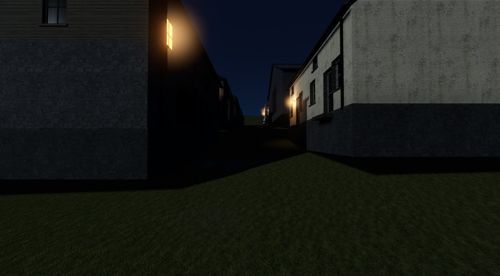
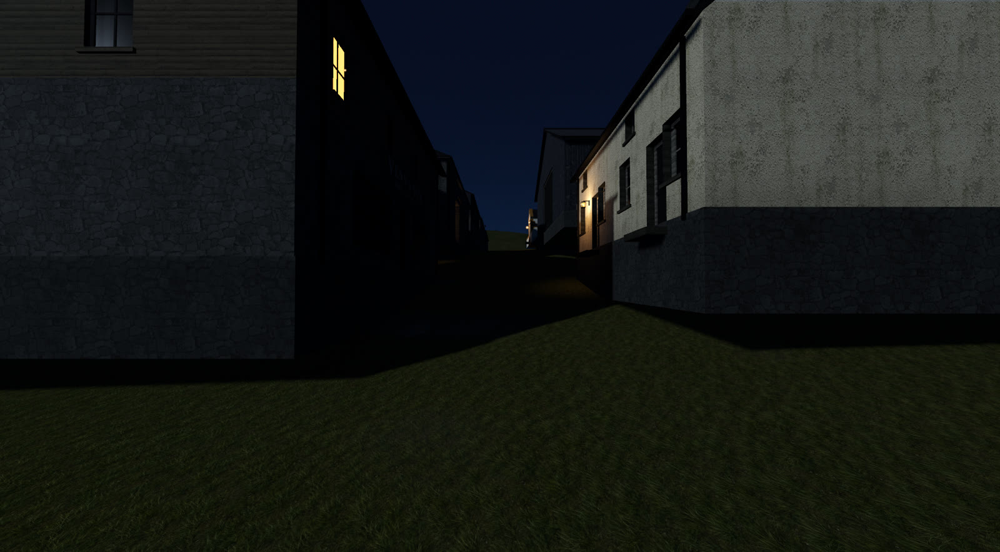
Without bloom the light has to come from the scene itself, so the glass in a lit window glows, each lamp throws real light onto the walls and paving around it, and nothing hangs a halo in the air. The one place a glow earns its keep is a long way off, where a lamp shrinks below a pixel and would otherwise just vanish, so every lamp and lit window carries a tiny sharp point that only appears once the lamp itself is down to a few pixels across. From out at sea the town reads as a scatter of pinpricks along the shore, with Low Head sweeping round on its headland, which is about what a small harbour looks like on a dark night.
A light you can count
Lighthouses are the most useful lights on any coast, and each one says something different. A light flashes in a pattern that’s printed on the chart beside it, so a sailor who sees two quick flashes every ten seconds out to the south knows which light that is and roughly where they must be. Greywick has two, and the South Lantern is the odder of the pair, a screw-pile reef light standing on a shoal well to the south, built after lights like Thomas Point Shoal in Chesapeake Bay and the Spit Bank light in Cork Harbour, with a hexagonal wooden house on raked iron legs, the lantern on its roof and a fog bell hung on a bracket. Low Head stands on the headland to the north-west of the harbour.
Both have real turning optics, and inside the South Lantern’s glass there are two flash panels a little over fifty degrees apart, and they go round once every ten seconds, so from a boat you see the first panel swing past, then the second about a second and a half later, then nothing until the pair comes round again. A chart writes that as Fl(2) 10s, and the chart in the game works it out from the optic itself, so if the panels ever change, the chart changes with them. Every frame the game checks how squarely each panel faces your eye, and when one does, the lantern goes from a dim glow to blinding and its reflection flares across the water between you and the light.
The beams went through more versions than anything else here. Each one is a long, thin cone drawn as haze lit from inside, and haze scatters light mostly forwards, which is why a beam seen side-on is a pale ray while the same beam swinging round toward you swells until it washes right over you; the shader uses the same formula for that forward scattering that’s commonly used for sunlight in clouds. The first beams were as thin as a pencil line and disappeared whenever they pointed away from the camera, because the glow was worked out from the wrong path length through the cone. Making them as wide as the lens, with an edge that fades softly into the dark instead of ending in a hard rim, is what made them read from across the bay. For a while the haze inside a beam also drifted round its axis, which looked lovely in a still and fizzed like static along the edges as soon as anything moved, so now it only thickens and thins along the beam’s length.
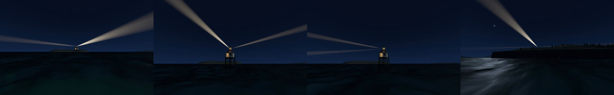
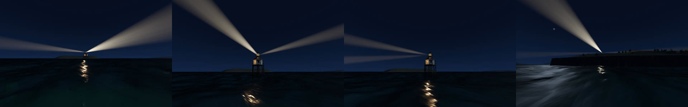
I also tried laying each beam’s light on the sea as it swept, a trail of glints under the beam, and took it out again. It was far too busy, and it isn’t what you’d actually see, since the haze in a beam is much too faint to show up on moving water. What does show is the lantern itself, as a path of glints running from the light toward you that flares each time a panel comes round.
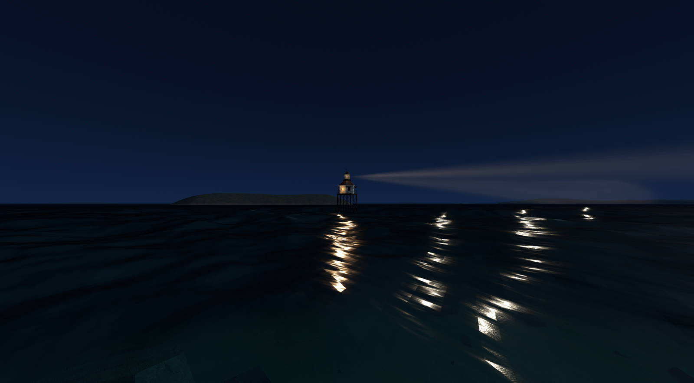
Low Head has four panels and turns once every twenty seconds, so it flashes every five, and it has something the South Lantern doesn’t. Real lights warn of a hazard by showing red over it, with coloured glass in that part of the lantern, so anyone who sees a red flash knows they’re standing into danger. South-west of the headland there’s a skerry, a low reef with a few rocks showing, and the arc of sea covering it and its shoals was measured from the drawn seabed. Sail into that arc and the flashes turn red, and so do the beams and their reflection on the water. The chart prints both lights with their patterns and draws the red arc, so you can work out which light you’re looking at by counting.
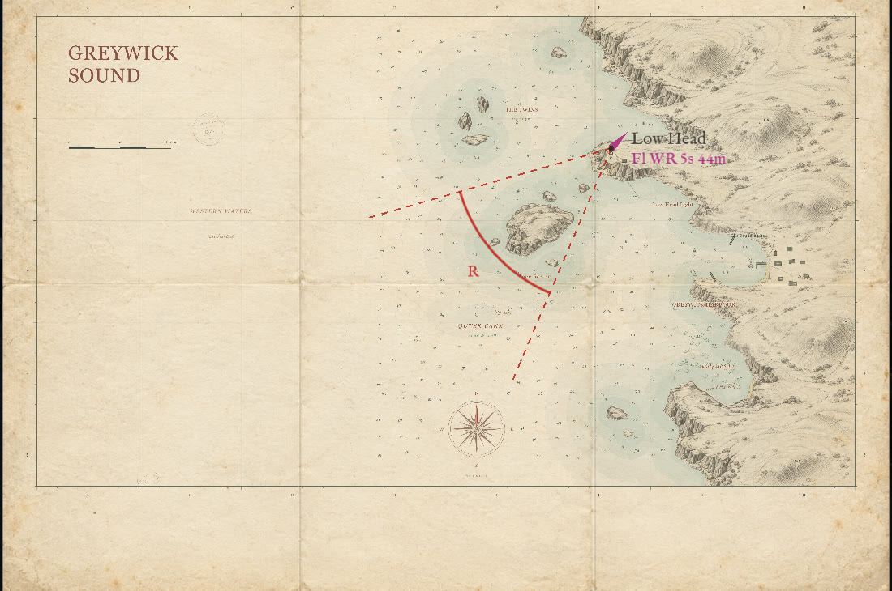
Here is the South Lantern running in your browser, with the game’s own model, the same turning optic, the same beam haze and the same test for when a panel faces you. Drag to move round the light, and watch the strip at the bottom, which traces the flashes you’d see from where you are. Wherever you stand, it comes out as two flashes and then a long dark, and the slowed setting makes it easier to see why. The fog slider thickens the air the way the game’s fog and mist do, and the beams shorten and brighten with it. The browser’s sea is simplified, but it lays the lantern’s glints on the water the way the game does.
Loading the light
Lamplight on the water
A harbour full of lamps looks strange if the water ignores them. The sea already reflects the sky, but a lamp needs something much sharper, so every lamp low enough to stand by the water carries an extra light that only the sea can see, and the sea draws it as a very tight mirror highlight. On moving water a highlight that tight breaks into separate sparks, so each lamp throws a broken streak toward you across the harbour that moves as you do. The streaks only come on toward dusk, because in daylight the reflection of the sky drowns them out. The boat got the same treatment along with proper lights of her own: a white riding light while she’s moored, and under way a masthead light, red and green sidelights and a stern light, each one visible only across its own arc, the way you’d read another vessel’s heading at night.
Weather
All of that was built against one fixed, clear night. Then Greywick got the weather that the crew game already had, which brings two layers of cloud moving with the wind, a sky with sun, moon and stars, rain, sea mist and fog, showers sweeping across in the distance and lightning. The skipper picks the conditions and the time of day, and the whole crew sees the same sky. Hooking it into the town was mostly a matter of letting everything follow it. The lamps used to come on with a night setting, and now they follow the sun down, and also come partly on in the middle of the day when a squall makes it dark enough, which is when people actually light their lamps. Rain darkens and glosses the stone, slate and render, more on the porous materials than on the metal, and the walls dry out over the following ten minutes or so once it stops.
The ground soaks as well. Turf darkens a little and bare earth, yards and sand a lot, and water stands in puddles on the level parts of the paths and yards, where they catch the sky by day and the lamps at night. The first puddles mirrored an overcast sky so cleanly that from a few metres away they looked like patches of frost, so they’re darker now and take a softer sheen, the way rain-pocked water does.
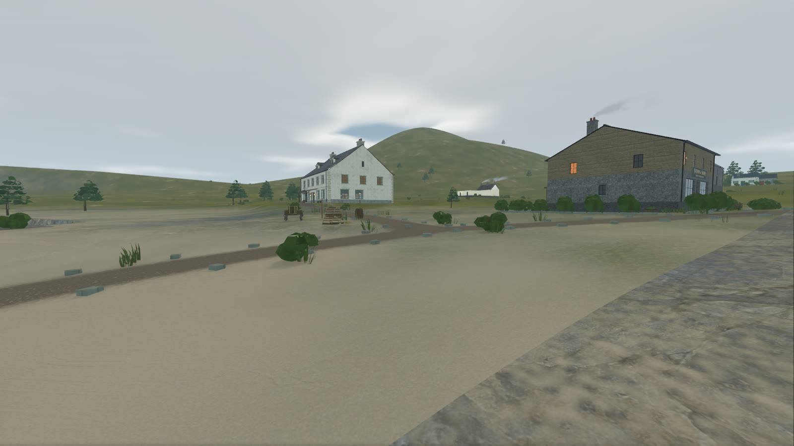
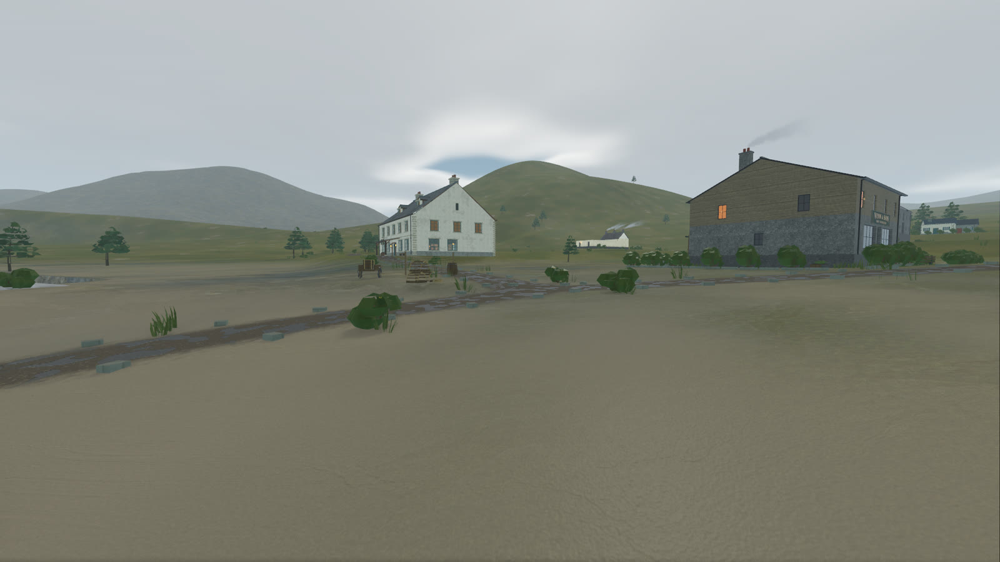
The houses people live in have smoke rising from their chimneys now as well, and since the chimney pots were already part of every house, a small tool finds them in the models and records where each stack is, and a soft plume rises from each one, thin in the daytime and heavier once the fires are banked up for the evening, bending over in the wind and lit by whatever light reaches it.
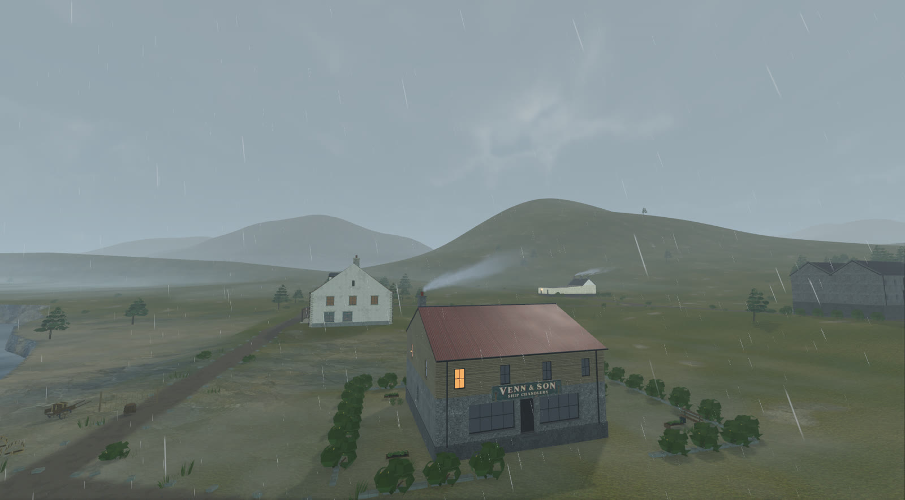
Lightning can hit the boat now, as it already could in the crew game. In a charged storm, strikes come down within a hundred metres or so of her, never aimed at a player. One that lands on dry timber can start a fire that burns until rain or a lack of fuel puts it out, and anyone close enough gets a shock that stops them in their tracks for a few seconds. There’s no damage, health or dying involved, so a strike costs you a few seconds and gives the crew a fire to watch.
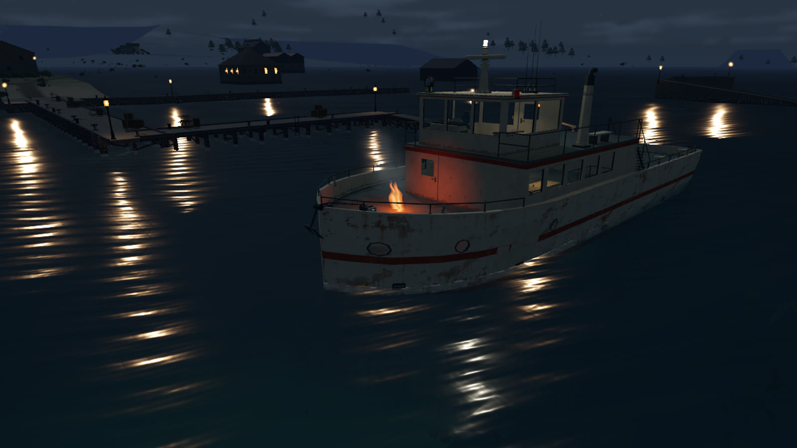
Fog was the one that didn’t work. The crew game draws its sea fog as a layer of air, and at night that air is very dark, which is physically right, since there’s nothing out there to light it, but it meant a foggy night looked exactly like a clear one with fewer stars. What makes a foggy night look foggy is the lamps, because each one lights up the air around it. Godot can do that with its volumetric fog, which works out the light in a grid of small cells in front of the camera, so in fog and mist the air close to you now thickens and every lamp lights its own patch of it. I tried three thicknesses side by side: you could barely see the thinnest, the thickest turned each lamp into a ball of light, and the middle one is what’s in the game. Clear nights get none of it, so they stay crisp.
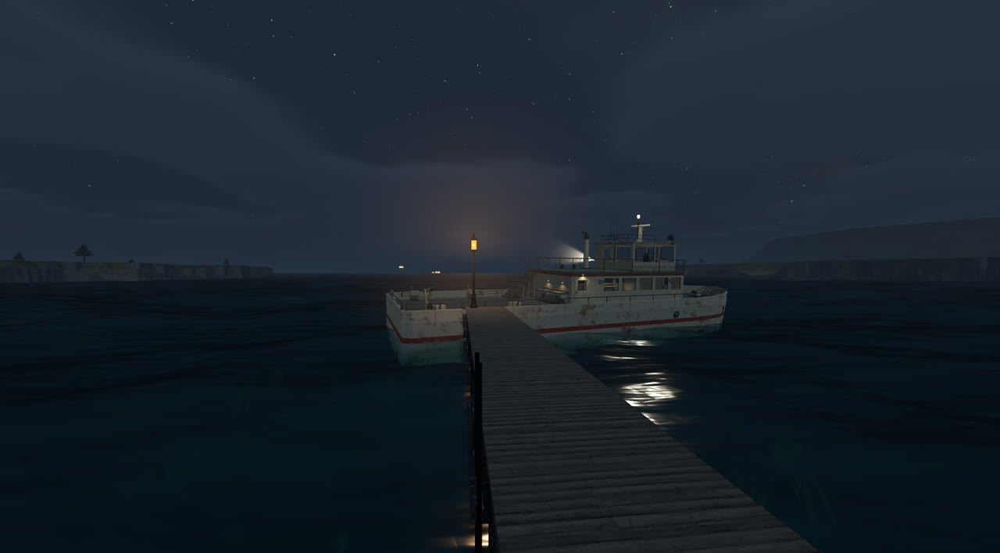
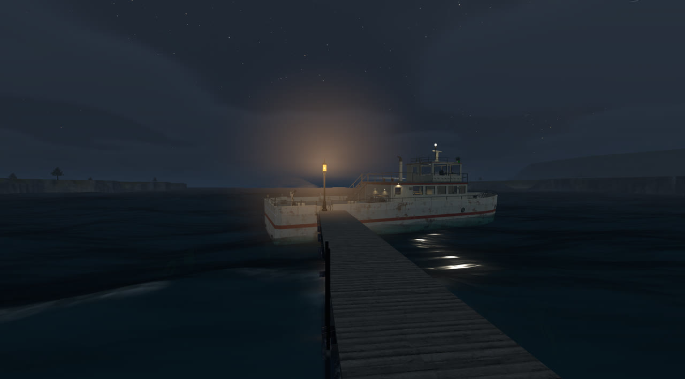
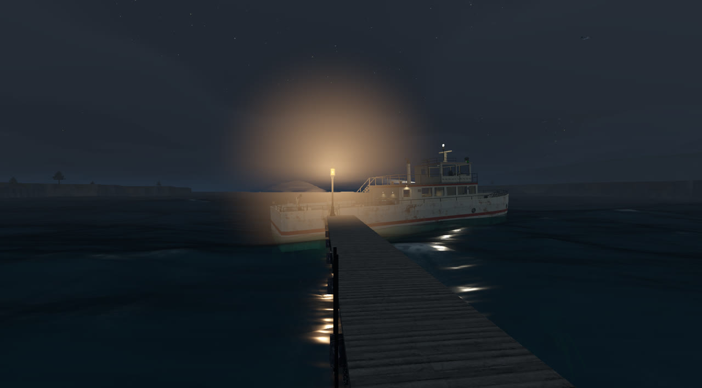
The lighthouse beams change in fog too, growing brighter close to the lantern and dying away much sooner, so in a fog bank the South Lantern becomes a short, thick shaft of light swinging round inside its own glow. A light like that would have a fog bell as well, and the model has always had one hanging off the seaward wall. Now it rings once every fifteen seconds whenever the fog is thick, on the same clock for everyone aboard. The recording is an old ship’s bell recorded by gsparrysound and released into the public domain on Freesound. A ship’s bell is much smaller and higher than a fog bell, so the stroke was slowed to a quarter of its speed, the way a tape slows down, which drops it two octaves to the size of a real reef light’s bell and makes it ring four times as long, as a bigger bell does.
A harbour that shelters
The weather turned up a problem that nobody had noticed on calm days. The sea is the same everywhere, so when a squall raised a big swell out at sea, the same swell rolled straight through the harbour and the moored boat heaved against the quay as if she were miles offshore. The answer is the same reason harbours are built where they are, since water that land wraps around sees very little of the open sea. For every patch of water around the harbour, the game now looks out in thirty-two directions and measures how far open water runs before it meets land, since waves need a long run of open water to build and travel. The inner harbour sees the sea only through its mouth, so it gets roughly a third of the waves outside, and the water at the mouth gets nearly all of them.
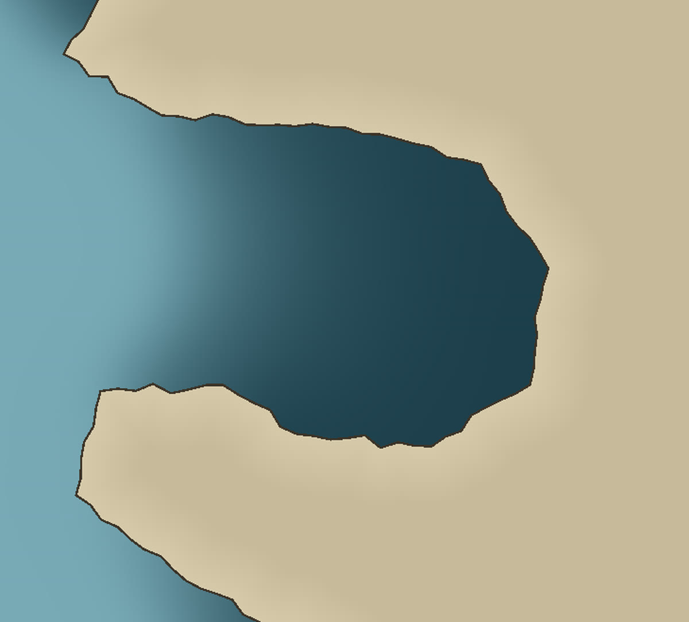
If you’re building something like this, the part worth copying is where the scaling happens. It’s applied to the waves before anything else touches them, inside the one function that both the drawn sea and the physics use, so the boat at the quay rides exactly the smaller waves you can see. The foam on the crests, the slopes that catch the light and the spray thrown off the tops all follow the same number. Measured over the same stretch of a squall, the water at the mooring now rises and falls about a third as much as it did, and the open sea outside is untouched.
Wind on land
The wind reaches the land now as well. Gusts run across the grass as paler patches where the blades bow over, the marram and gorse along the paths lean and shiver, and the wind-bent pines on the slope above the town rock in the stronger gusts. All of it follows the weather’s wind and moves with the same drift as the clouds overhead.
Next for the nights are fog banks you can watch rolling in from the sea, where at the moment fog simply thickens around you.